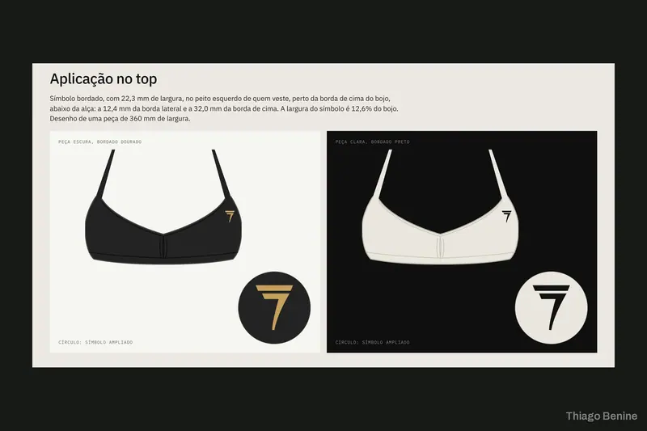
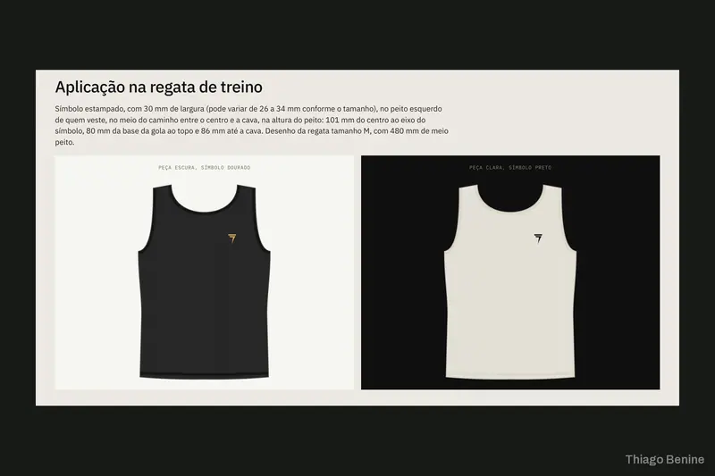
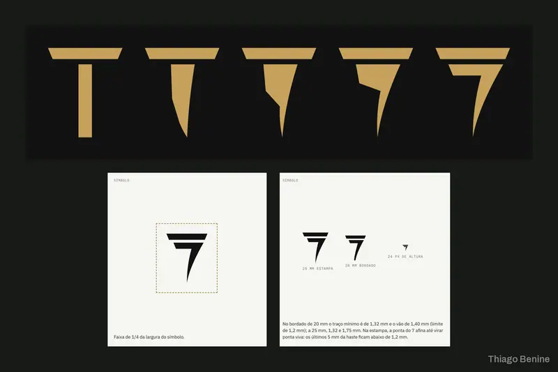
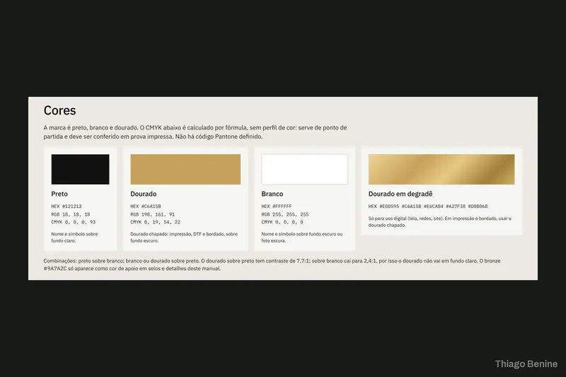

Identidade
Identidade visual completa para escritório de advocacia
Jurídico4 dias 5,0
Símbolo autoral com grade de construção, manual da marca e simulações de aplicação.
Monograma final: o T e o 7 desenhados juntos, em dourado sobre o preto e em preto sobre o claro.
Uma marca de roupas streetwear inspirada na filosofia estoica queria um monograma sofisticado e autoral.
Foram apresentados três conceitos com grade de construção, e o escolhido virou pacote completo, com manual da marca e simulações de aplicação nas peças.
A marca saiu com um símbolo forte, simples e com personalidade.
Toque em uma imagem para ver ampliada.




“Durante todo o projeto, teve muita atenção aos detalhes, disposição para realizar os ajustes e boas sugestões que contribuíram para o resultado final. A comunicação foi excelente e a entrega veio muito bem organizada.”
Me chame pela 99Freelas. Você recebe a proposta com escopo, prazo e valor fechados antes de começar.
4,98 em 86 avaliações · 93 projetos concluídos